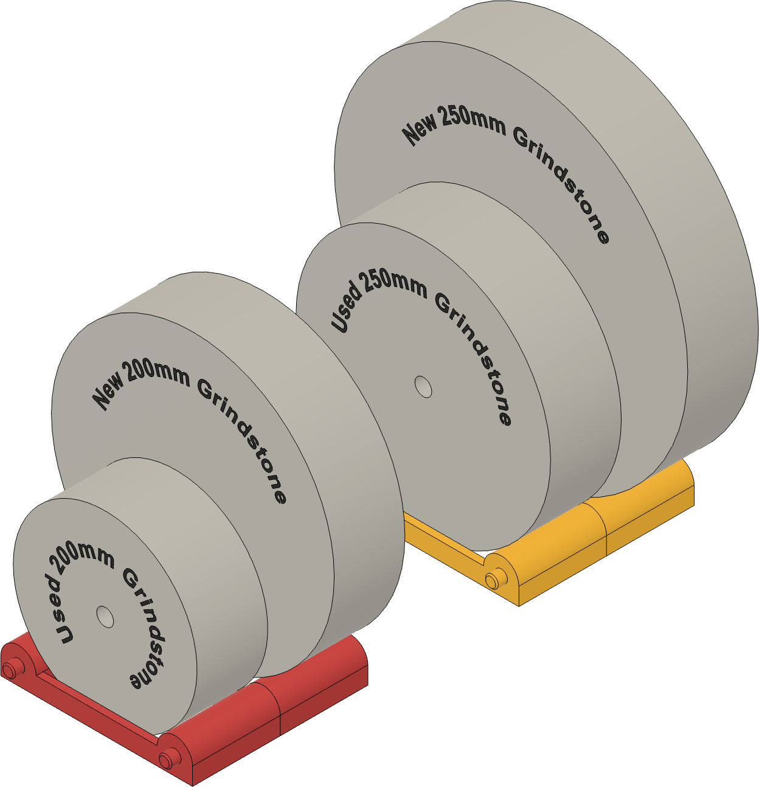
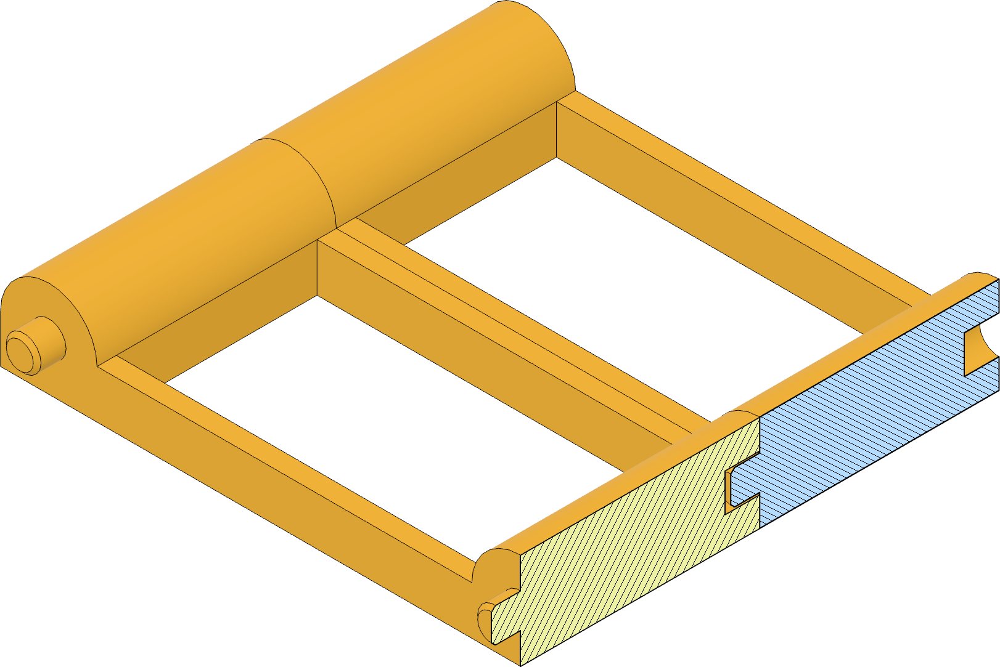
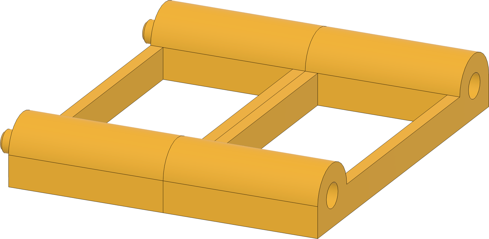
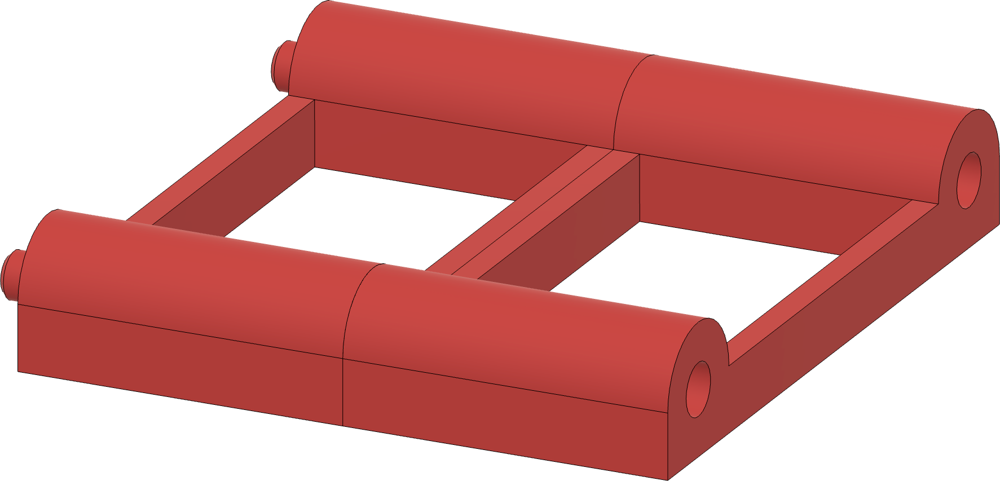

|
|
|
Grindstone Stand |

Grindstone stands
I have come to the recognition that, when I am done sharpening for the day, it is a good practice to:

Sectional view showing stands snapped together
These 3D-printed stands provide an easy place to store the grindstones whilst they dry.
As shown in the picture to the right, they are sized to fit the grindstone when it is new, through to when it is at end of life.
And as shown in the sectional picture to the left, the stands are designed to be snapped together, giving you the ability to add stands as needed without taking up un-needed shelf space.
I 3D-printed mine using PLA and standard settings on the slicer.
I did add tree supports for the mortise hole and the tenon. Whilst neither was perfectly round, the printed parts fit together quite well.
|
Grindstone Size |
3D Printing File |
Comments |
|
 250mm |
For use with the 250mm grindstones used on the T-8, T-7, & SuperGrind 2000. Grindstone diameter: These stands accommodate grindstones from 250mm, down to 180mm (i.e., end of life). Grindstone width: They are designed for a grindstone width of 50mm, but with a little extra room to allow air to freely circulate. |
|
|
 200mm |
For use with the 200mm grindstones used on the T-4, T-3, & SuperGrind 1200. Grindstone diameter: These stands accommodate grindstones from 200mm, down to 130mm (i.e., end of life). Grindstone width: These grindstones are typically not 50mm wide; however some do relegate used 250 mm grindstones to these machines (historically done for the SB-250 as there was no SB-200 grindstone). Thusly, they are designed for a grindstone width of 50mm, but with a little extra room to allow air to freely circulate. |